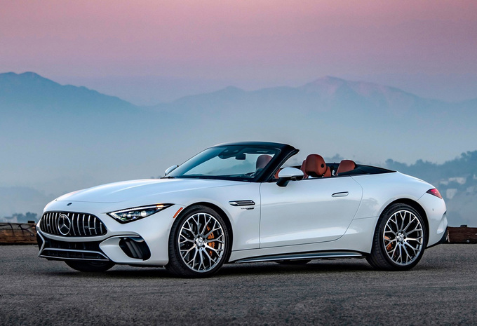

MERCEDES-AMG
Mercedes-AMG SL 63
جميع نسخ Mercedes-AMG SL مع المواصفات الرسمية مرتبة في صفحة واحدة لتسهيل المقارنة بين جميع الإصدارات.
جميع نسخ Mercedes-AMG SL مع المواصفات الرسمية مرتبة في صفحة واحدة لتسهيل المقارنة بين جميع الإصدارات.

| المحرك | 2.0 لتر تيربو |
| عدد الأسطوانات | 4 |
| القوة | 381 حصان |
| عزم الدوران | 480 نيوتن متر |
| ناقل الحركة | AMG SPEEDSHIFT MCT 9G |
| نظام الدفع | خلفي |
| التسارع (0-100) | 4.9 ثانية |
| السرعة القصوى | 275 كم/س |
| عدد المقاعد | 2+2 |
| نوع الوقود | بنزين |
| المحرك | 4.0 لتر V8 توين تيربو |
| عدد الأسطوانات | 8 |
| القوة | 476 حصان |
| عزم الدوران | 700 نيوتن متر |
| ناقل الحركة | AMG SPEEDSHIFT MCT 9G |
| نظام الدفع | 4MATIC+ |
| التسارع (0-100) | 3.9 ثانية |
| السرعة القصوى | 295 كم/س |
| عدد المقاعد | 2+2 |
| نوع الوقود | بنزين |
| المحرك | 4.0 لتر V8 توين تيربو |
| عدد الأسطوانات | 8 |
| القوة | 585 حصان |
| عزم الدوران | 800 نيوتن متر |
| ناقل الحركة | AMG SPEEDSHIFT MCT 9G |
| نظام الدفع | 4MATIC+ |
| التسارع (0-100) | 3.6 ثانية |
| السرعة القصوى | 315 كم/س |
| عدد المقاعد | 2+2 |
| نوع الوقود | بنزين |